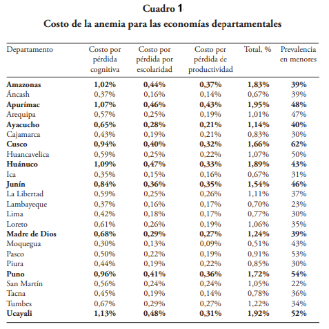
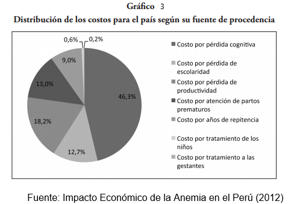
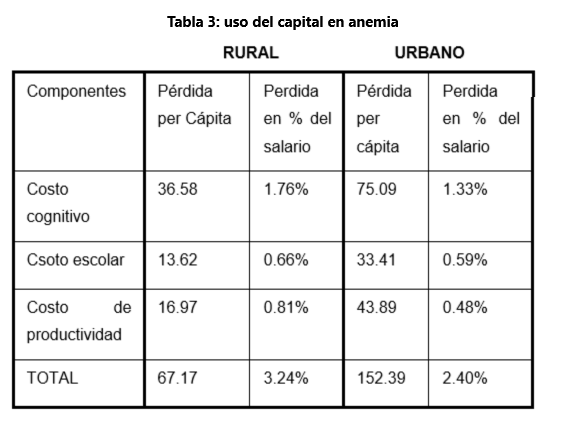

El impacto que tiene la anemia es súper delicado, ya que no solo es un indicativo que el país es una región subdesarrollada que cuenta con dificultades sanitarias y nutricionales a nivel nacional, sino que también es un indicativo de cuanto gasto y la cantidad de millones de soles invertidos que se van al agua por la deficiencia que causa la anemia. Impacto Economico Este es el caso de regiones pobres con grandes índices de anemia, que se ven envueltas en una situación inequitativa por la cual sus poderes regionales no son capaces/no priorizan ayudarlos.
 Bastante se ha hablado sobre el impacto que tiene la anemia en el Perú y como esta hace al estado y en sí a la población peruana perder cada año millones de soles en tratar de combatir la anemia y reducirla en próximos años (situación que aún se espera y se estima que en unos años se pueda disminuir). Por una parte tenemos el trabajo de la autora Lorena Alcázar, la cual escribió un artículo-libro el cual demuestra las enormes pérdidas económicas que ha sufrido no solo el Perú, si no todo Latinoamérica en relación a la anemia. Por obvias razones se dará un enfoque al Perú y el impacto que ha tenido la anemia en el país. La pérdida gracias a la anemia es abismal, ya que se muestra una pérdida per cápita total del 74,8 y en porcentaje un 0,55% de pérdida porcentual del PBI per cápita, que a simple vista no es un número muy grande pero a niveles económicos demuestra una pérdida bastante significativa.
